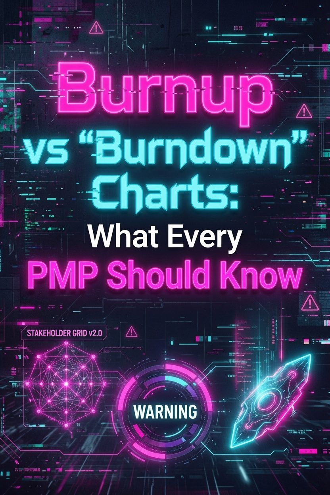

Burnup vs Burndown Charts: What Every PMP Should Know

Burndown and burnup charts look similar. Both track work over time. Both use a diagonal line to show progress. Pick the wrong one for your context and you introduce confusion instead of clarity. Pick the right one and your sprint or release status becomes obvious at a glance.
The difference comes down to one question: do you need to see scope changes?
What Is a Burndown Chart?
A burndown chart tracks remaining work over time. Time runs along the x-axis. The amount of work left runs up the y-axis. The chart starts at the total estimated effort on day one and trends downward to zero.
It includes two lines:
- Ideal trend (dashed) — the straight line from total effort to zero. This is the theoretical path if the team burned work at a constant rate.
- Actual trend (solid) — what the team actually completed each day.
If the actual line sits above the ideal line, the team is behind. If it dips below, the team is ahead. The gap between the two lines tells you whether you will finish on time at the current pace.
Burndowns work well for sprint-level tracking where the scope is fixed for the iteration. The team commits to a set of stories, and the chart shows whether they are burning through that work fast enough.
What Is a Burnup Chart?
A burnup chart tracks completed work over time. Instead of starting at the total and trending down, a burnup starts at zero and trends up. It has two lines:
- Total scope line — the full amount of work planned. This line can move upward if the team adds scope.
- Completed work line — what the team has actually finished so far.
When the completed line reaches the scope line, the work is done. The gap between them is what remains.
Burnups excel at release-level tracking where scope can shift. When stakeholders add features, the scope line rises. The completed line may not catch up. Everyone sees the impact of the change immediately.
Key Differences
| Dimension | Burndown | Burnup |
|---|---|---|
| Direction | Lines go down | Lines go up |
| What it tracks | Work remaining | Work completed |
| Scope visibility | Hidden (scope changes distort the line) | Visible (scope line moves independently) |
| Best for | Sprint-level, fixed scope | Release-level, changing scope |
| Newcomer clarity | Moderate (line going up = bad) | Higher (line going up = good) |
| Scope creep signal | None (looks like slow progress) | Clear (scope line rises) |
The critical difference: a burndown chart cannot distinguish between "we are working slowly" and "we added more work." Both cases make the actual line stay above the ideal line. A burnup chart shows the scope line rising, so you know when scope changed versus when the team underperformed.
Atlassian sums it up: if scope stays fixed, both charts work. If scope changes, burnup is clearer.
When to Use Each
Use a burndown chart for sprints. A two-week sprint with a fixed backlog is the natural home for burndowns. The team commits to stories, and the chart tracks whether they will finish by the sprint end. Sprint burndowns are the default in Scrum for a reason: sprint scope should not change.
Use a burnup chart for releases and roadmaps. A release spans multiple sprints. Stakeholders will request changes. The burnup makes those changes visible. When the scope line jumps up at week 4, everyone sees the impact. PMI recommends burnups at the release level specifically because scope changes are expected and should be transparent.
Use a burnup when stakeholders distrust status reports. A burndown chart with a flattening trend looks like the team stopped working. A burnup shows the team steadily completing work while scope keeps growing. That distinction matters when you need to explain why the release date moved.
Burnup and burndown are 2 of the 31 chart types on the PMP exam. The PMP Charts & Data Visualizations Study Guide + Practice Test 2026 covers every one — Gantt charts, network diagrams, Earned Value S-Curves, control charts, Pareto diagrams, Tornado diagrams, Power-Interest Grids, Salience Models, Resource Histograms, and more — across 42 full-color pages. Each diagram includes exam-specific tips, common traps, and a direct tie to PMBOK 8 processes. The 40-question practice test includes calculations, scenario-based items, and multiple-choice. Designed for anyone who wants to stop confusing similar-looking charts and start recognizing them on sight.
Example: Spot the Problem
Your team runs two-week sprints. At sprint planning, you commit to 80 story points. The burndown chart shows the actual line hovering above the ideal line for the entire sprint. At the sprint review, you delivered 60 points.
Was the team slow, or did scope increase? The burndown cannot answer that. You need to look at the backlog changes.
Now imagine the same situation on a burnup chart. You set the scope line at 80 points. On day three, the product owner added a 15-point story. The scope line jumps to 95. Now the gap between completed work and scope is 35 points instead of 20. Anyone looking at the chart sees a scope increase, not a performance drop.
This matters on the PMP exam. Questions about agile metrics often present a scenario where scope creep happened. The correct answer for tracking overall release progress in a changing environment is the burnup chart, not the burndown.
Agile and PMP Context
The PMP exam covers agile charts in the "Agile Frameworks and Methodologies" domain. You may see a question that describes a chart with a scope line and a completed line, or a chart that tracks remaining work over time. Recognizing the names and the use case is the baseline.
The harder questions test judgment. For example: "A project is in its third release. The scope has changed twice. Which chart should the project manager use for tracking progress?" The answer is burnup, because it handles scope changes transparently.
Another pattern: "The team is halfway through a sprint and the burndown chart shows the actual line above the ideal line. What does this mean?" It means the team is behind, not that scope changed. Sprint scope is supposed to be fixed.
Last updated: June 26, 2026
Want the full study system? The PMP Exam Cracker delivers 64 pages of compressed study guide, 80 practice questions, and an annotated answer key — built for the 8th Edition exam.